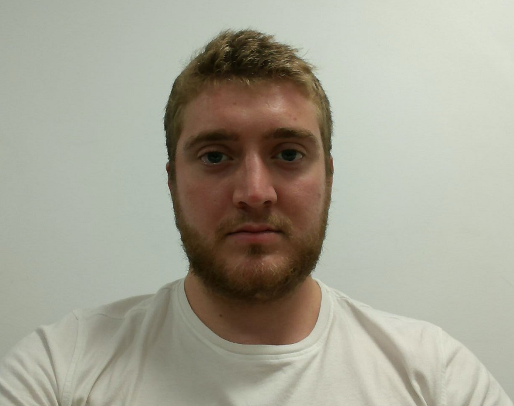

De plus je suis curieux de nature ce qui m'a permis d'approfondir certaines discipline enseigné.
Ainsi j'ai une formation en CAO délivré par SolidEdge, je maitrise aussi DesignSpark, Proteus ISIS, SketchUp...
Je sais codé en C, C++, Java. J'ai des notions en programmation web (html, php, css et javascript).
Atouts
Ayant suivi un cursus généraliste d'ingénieur, j'ai pu me familiariser avec beaucoup de domaine technique.De plus je suis curieux de nature ce qui m'a permis d'approfondir certaines discipline enseigné.
Ainsi j'ai une formation en CAO délivré par SolidEdge, je maitrise aussi DesignSpark, Proteus ISIS, SketchUp...
Je sais codé en C, C++, Java. J'ai des notions en programmation web (html, php, css et javascript).
Expériences
J'ai effectué de nombreuses taches dans le batiment depuis que je suis jeune afin de gagner de l'argent.En effet cela fait plus de six ans que tous les étés je signe un CDD avec diverses entreprises du BTP.
J'ai été couvreur zingueur, plombier, assistant chargé d'affaires, aide comptable, secretaire cabinet communication et auxiliaure RH.
J'ai donc été confronté au monde du travail assez jeune cela m'a permis de gagner en maturité.
De même, en occupant diverse poste j'ai pu acquérir une petite connaissance du monde de l'entreprise et du BTP.
Langue
Français * * * * *
Anglais * * * *
Espagnol * * *